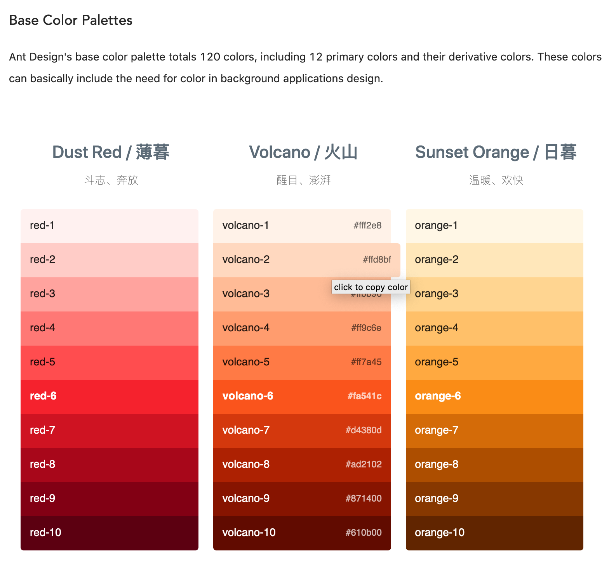
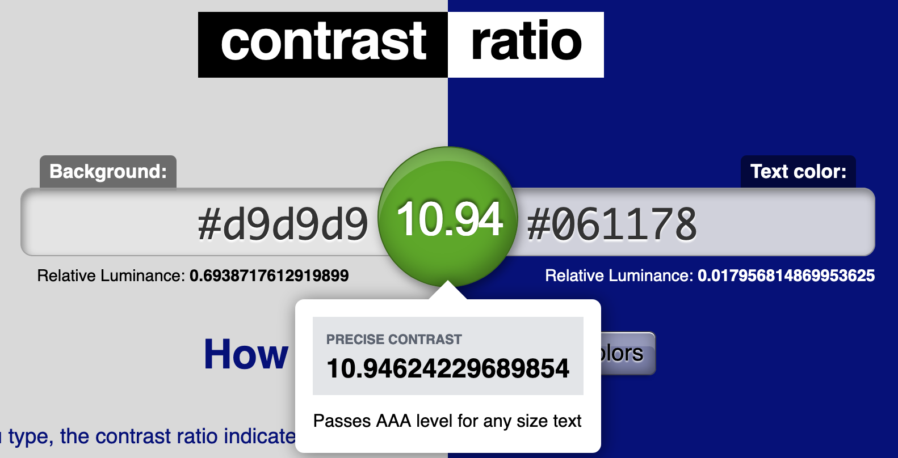
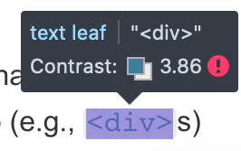
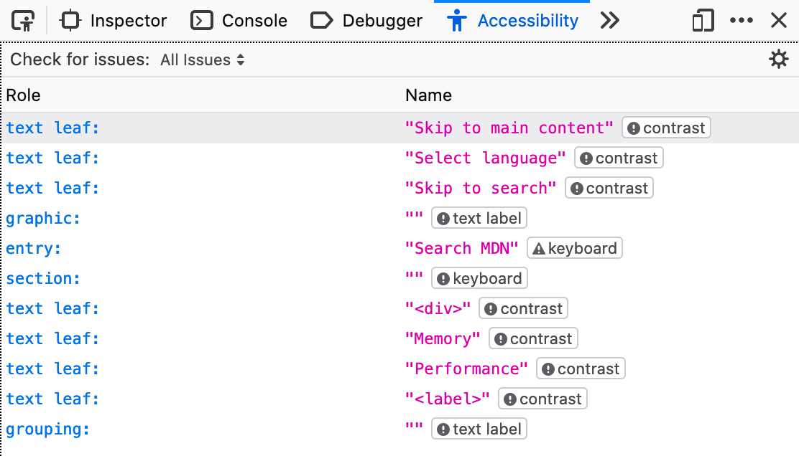
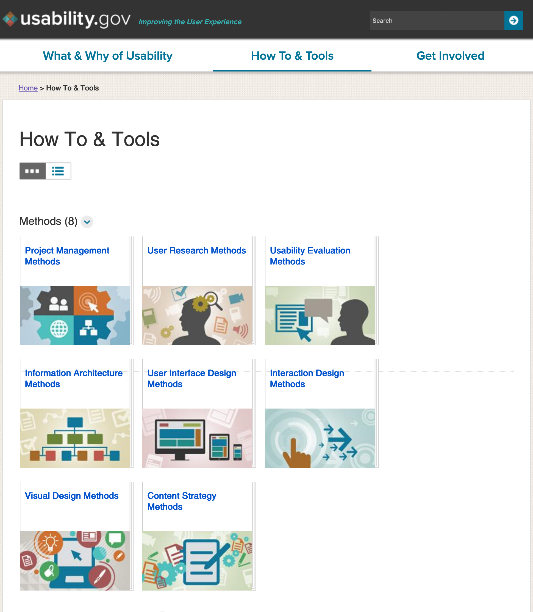
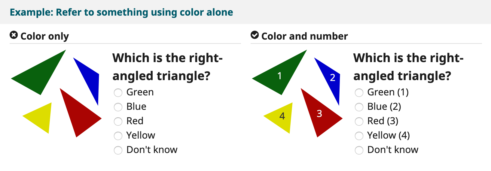

Conclusions and Additional Resources
This wraps up just a few instances where accessibility accommodations should influence design decisions. There are a wide array of resources out there which can aid with making decisions related to accessibility and usability, which will be detailed below. In the end, not only does the system end up being more usable for average users, but it can reach and be better utilized by all.
Resources
Whether it be testing tools or design tools, there are many systems out there which can assist with making sure a system is accessible from the start.
Ant Design Colors
Ant Design is a framework for React, but their design guidelines have many useful tools and concepts to consider. With regard to accessibility, the Ant Design Colors section within the design guidelines has a wonderful color picker tool.

Ant Design's Colors page offers a selection of base color pallettes to select from. There is a wide range of base colors to choose from, each with a range of 10 luminances.
The color selection is quite good, with warm and inviting colors to choose from. The hex values for a color can be copied to the clipboard by simply clicking the desired color.
With many potential combinations from this color picker, alone, there are many possibilities. However, the possibilities should be limited based upon whether or not the contrast between selected colors is in an acceptable range. See the following section on contrast ratio checkers for further resources that, when paired with the Ant Design Colors page, can offer great assistance with defining a color pallette.
Contrast ratio checkers
There are many websites and tools that can aid with ensuring that colors have proper contrast for not only issues related to color deficiencies but also aid with making sure visibility is high enough for any users.
contrast-ratio.com is a simple to use website which can help with defining the color pallettes of any sort of system. It accepts a variety of color code formats, from RGB and RGBA to hex and HSLA.

The interface for the site is quite to the point, simply plug in the "Background" color on the left text area and the foreground or "Text color" in the right text area, and the contrast ratio is evaluated.
Hovering over the contrast ratio value between the two text fields will display some more information about the current inputs.
The site follows WCAG 2.0 rules on contrast, and the information displayed about the current ratio conveys whether or not it passes these standards.
Our brand colors for designbyte show a contrast of 10.94, which passes the WCAG standards at a AAA level, meaning the dark blue is an appropriate use for text of any size on the light gray background color.
This is a useful site to consider when designing with tools outside the realm of web interfaces, whether it be with applications like Adobe InDesign or while creating a desktop application. This tool will assist with making sure colors are up to WCAG specifications, albeit in a semi-manual manner. For web-related projects, see the Mozilla Firefox Accessibility Inspector section for more of an automated approach and a more full suite of tools.
Mozilla Firefox Accessibility Inspector
Mozilla Firefox has recently pushed a suite of tools for accessibility testing into the browser. After Firefox version 79, an Accessibility Inspector functionality was enabled by default in web developer tools (i.e. Inspect Element). This functionality is useful in many cases, and being that it is native functionality there is no reason not to use it.

After version 79 of Firefox, the Inspect Accessibility Properties is available within the right-click context menu for any webpage on the Mozilla Firefox browser. This will open the standard developer tools panel for the browser, focussed on the Accessibility pane.
Source: Mozilla MDN web docs: Accessibility Inspector Tools
The functionality offers automated and manual checks for various types of issues. The issue types cover Contrast for visual impairments and general visual issues, Keyboard for navigating a page with keyboard controls, and Labels for visual impairments requiring screenreaders

The Accessibility Inspector allows for semi-manual checks for contrast issues while hovering over an element in the "pick object" mode, shown in the upper left of the Developer Tools pane.

The automated accessibility checks are able to be filtered by the various types of issues that the browser flags.
On top of offering the ability to assess a system’s colors and contrast for visual design, it offers tools to evaluate the tab order for objects, as is important for using keyboard controls with some impairments.

The Accessibility Inspector also offers a toggle to display the tab order for the current page. This is especially helpful for testing with keyboard navigation in mind.
Source: Mozilla MDN web docs: Accessibility Inspector Tools
Additional information on the functionality can be found on the Mozilla MDN web docs: Accessibility Inspector Tools page.
U.S. Department of Health and Human Services: Web Design & Usability Guidelines

The usability.gov website offers a lot of documentation related to things such as accessibility and basic quidelines for designing an accessible system.
On top of covering accessibility, it offers a good number of guides on user experience and design basics, so it is a useful site to browse, overall.
Web Content Accessibility Guidelines (WCAG)
WCAG is an accessibility guideline and initiative which aims to ensure that webpages are accessible to all. The WCAG webpage supplies various tools and tips, and thorough requirements on many topics related to the web.
From hosting video content and subtitles to accommodating all device sizes, the WCAG has guidelines and requirements for it all.

The Designing for Web Accessibility page offers a variety of examples of requirements which should be followed while designing an accessible system.
The above example shows things to avoid when designing a system and a suggested fix. It is not acceptable to identify objects based upon color alone, in this example of a sort of quiz, and instead have additional identifiers to accommodate those with color deficiencies.
This example is not only applicable in this instance, but with many elements in a system. For instance, the hover or focus animations for a hyperlink should convey that the element is selected by means other than color; the hyperlinks on this site add underlines or borders when the elements are focussed in order to better convey that the object is the current focus by a means other than color.